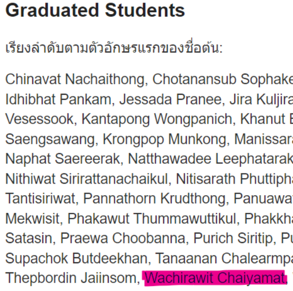

AI Builders 2022
Completed a project in data science and artificial intelligence with a project to classify plants in the basil family.
using transfer learning with goolgenet, resnet152 ,and VGG19.
googlenet is the most accurate and 34.5% better than the sample person.
READ MORE
googlenet is the most accurate and 34.5% better than the sample person.